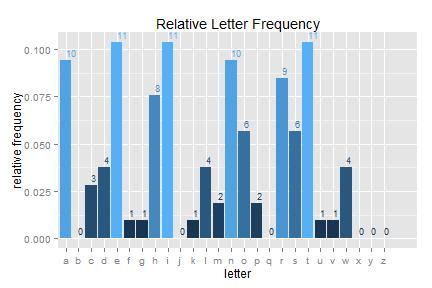

Ever read some text and wondered what the distribution of characters looks like?
Whether that wall of text contains 23 a's, or 24?
What the most common English letters are?
D Bolotov
Ever read some text and wondered what the distribution of characters looks like?
Whether that wall of text contains 23 a's, or 24?
What the most common English letters are?
hey there
Let's define a test string, get frequency counts for it, and plot them.
str <- "I am a string with numeric (123) and other non-alpha (%$^#&!)characters."
sanitize(str)
## a c d e g h i l m n o p r s t u w
## 7 3 1 3 1 4 4 1 2 5 2 1 5 2 4 1 1
Let's define a test string, get frequency counts for it, and plot them.
fplot(str)

Enter your own text, check other distributions, and see it in action here: letterFreq!